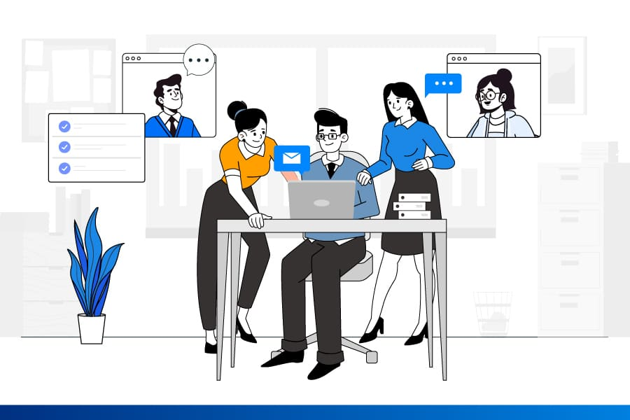

Comunicación interpersonal: Los canales de comunicación como las llamadas telefónicas, los mensajes de texto, los correos electrónicos y las videollamadas se utilizan para comunicarse directamente con otras personas. Estos canales son útiles para mantenerse en contacto con amigos, familiares o colegas de trabajo.
Comunicación en grupo: Las aplicaciones de mensajería instantánea como WhatsApp, Slack o Telegram permiten la comunicación en tiempo real entre grupos de personas. Estos canales son útiles para coordinar proyectos, discutir ideas o mantener informado a un equipo de trabajo.
Comunicación empresarial: Las empresas utilizan canales de comunicación como el correo electrónico, las reuniones virtuales, las intranets y las redes sociales internas para facilitar la comunicación entre empleados, departamentos y niveles jerárquicos. Estos canales son esenciales para compartir información, tomar decisiones y mantener a todos los miembros de la organización informados.